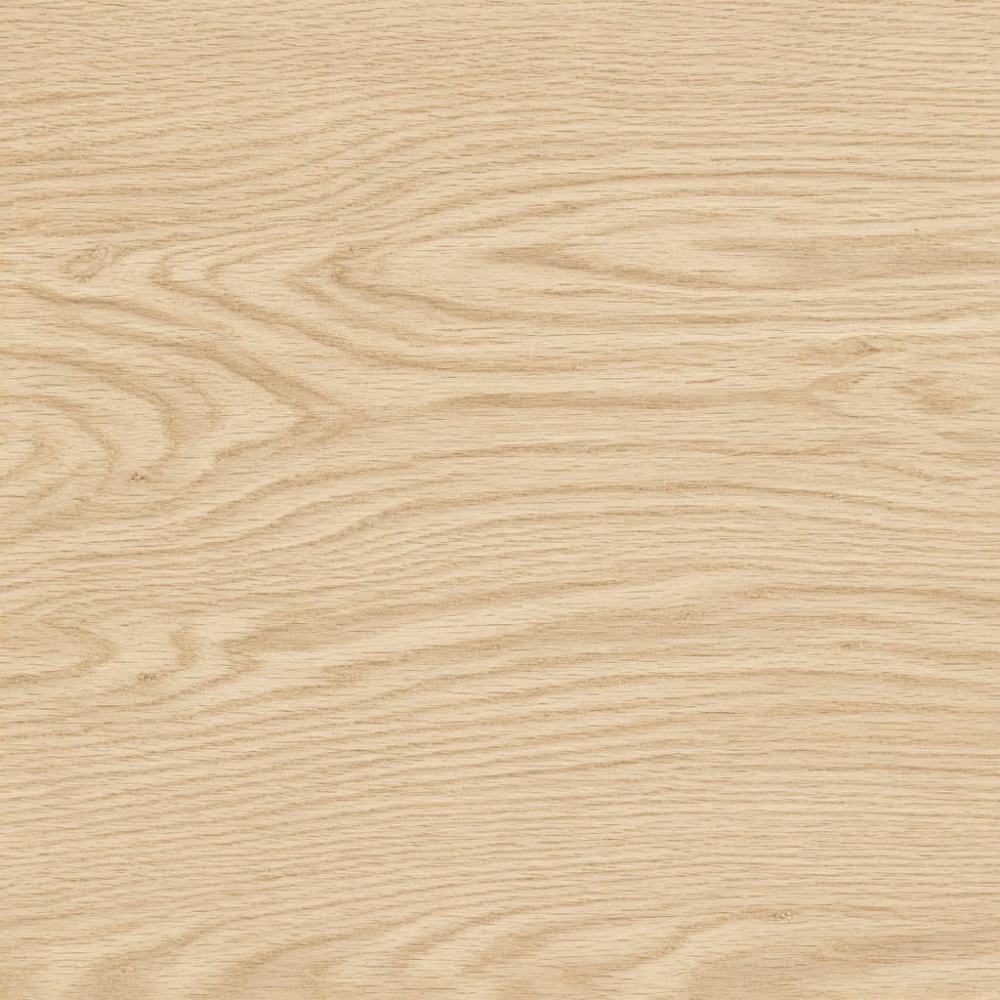
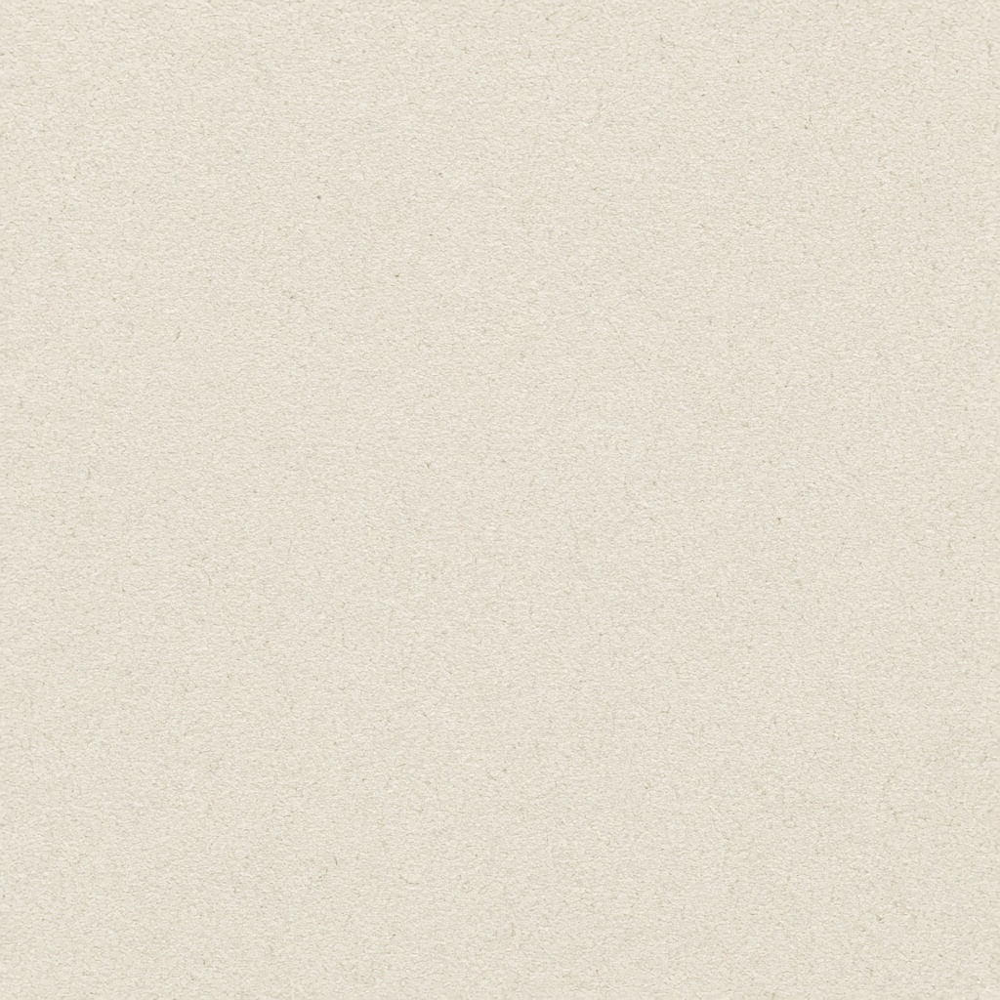

Дуб
Тепле дерево. На сторінці воно займає кадр цілком, без іконок поруч.
Дім предметів · сезон
Стіл, світло і льон. Колекція, якій вистачає тиші й однієї сторінки.

Тепле дерево. На сторінці воно займає кадр цілком, без іконок поруч.

Тонка ніжка і темний край. Світло ковзає, предмет не пояснюють списком.

Льон і картка колекції. Мало тексту. Досить, щоб руку потягнуло ближче.
Одна річ на кадр